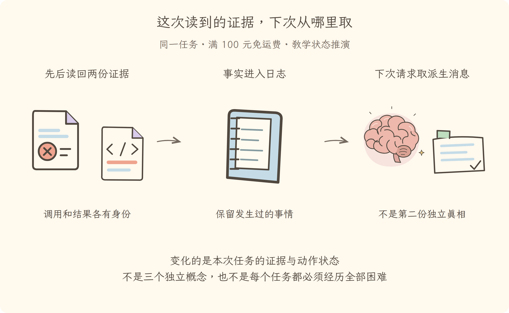

学习导航
第05讲 · 这次读到的证据，下次从哪里取
源码基线：cd5ef8148158c3a752a658978873241fdf8e2bbc。业务案例为虚构 Java 运费服务；图与流程是教学推演，源码事实另有固定证据。
从这里接上
报告和代码分次获得，不能依靠模型凭空记忆。本讲要回答：这次读到的证据，下次从哪里取？
上一讲解决了“拒绝、失败和成功分别形成真实结果；未授权不写入”；这仍不能代替本讲要补的责任。
阅读与完成标准
先看逐步讲解，再做练习。视觉课件用于复习，词典随用随查，不要求先背英文。预计正文阅读 20–35 分钟，练习 10–20 分钟；这是安排建议，不是学会的证明。
读完应能解释：为什么调用请求和工具结果必须分别留痕？ 还要能预测：日志在内存里有新事件，能保证重启后还在吗？ 最后从源码证据定位相应责任。
现在必须懂的是本讲怎样改变证据或动作状态；具体框架中的其他选项知道存在即可，不用一次读完整个包。语法卡住可查补课 A、补课 B，工程定位查补课 C，看完返回此处即可。
本讲交接
日志记录事实，再派生下一次请求的消息。但下一步还要解决：有工具却总漏步骤，怎样带上排查手册。
← 第04讲：受控工具 · 第06讲：技能与外部接入 →
视觉课件
第05讲 · 这次读到的证据，下次从哪里取
源码基线：cd5ef8148158c3a752a658978873241fdf8e2bbc。业务案例为虚构 Java 运费服务；图与流程是教学推演，源码事实另有固定证据。
当前现场
报告和代码分次获得，不能依靠模型凭空记忆。固定业务约定不变：满 10000 分免运费；原实现在等于时返回 800。禁止用修改预期的方式让测试变绿。

三分钟复述
先描述左格缺什么，再说明中格采取的机制，最后指出右格新增了哪些证据或责任。日志记录事实，再派生下一次请求的消息。不要只读图上的物件名；删掉中间这项机制，任务会在哪一步失去依据？
本讲最容易误会的是：日志在内存里有新事件，能保证重启后还在吗？ 不能。要看持久化后端是否存在以及保存是否完成；会话包的等待入口不是磁盘实现。
从图返回源码
图只表达教学关联与状态变化，不代替完整调用顺序。源码定位提供实现或契约证据，正文解释映射和边界。
← 第04讲：受控工具 · 第06讲：技能与外部接入 →
逐步讲解
第05讲 · 这次读到的证据，下次从哪里取
源码基线：cd5ef8148158c3a752a658978873241fdf8e2bbc。业务案例为虚构 Java 运费服务；图与流程是教学推演，源码事实另有固定证据。
一、每次请求都重新组织，证据放在哪里
第四讲保证读文件和编辑都有回执。现在第二次请求来了：模型怎样知道报告已经读过，文件还没获准修改？不能依赖模型“脑中记住了上一次”。系统必须把需要的事实再次组成可见历史。
Session（会话）在本项目中首先是一份仅追加事件日志，像这次排查的工作记录簿。它不是模型本身，也不是一个永远不丢内容的神奇记忆。报告、调用、结果和轮次边界按事实发生顺序记录，之后再从记录派生模型要看的消息。
三格为同一运费任务的教学状态变化或故障对照。图不是实际运行日志；关键区别见各格说明。
二、记录“说过什么”和“做过什么”要分开
本书同一任务的简化记录可以这样阅读：
用户请求：只排查
调用 1：读取报告
结果 1：10000 分，预期 0，实际 800
调用 2：读取代码与约定
结果 2：严格大于；约定却包含等于
助手回复：原因已定位，等待修改授权
这不是上游事件的完整序列化格式，而是方便人阅读的投影。真实日志还包含轮次、步骤、流式片段等事件。调用和结果要靠标识关联；“助手回复说已读取”不能替代读取结果。
如果一条结果没有对应调用，或者一个调用在中断后没有结果，系统就需要明确处理这个缺口，不能由语言流畅程度决定相信哪一版。
三、为什么强调仅追加与输入快照
Append-only（仅追加）表示新增事实继续追加，而不是回头改写已经记下的历史。Projection（派生视图）则是从原始日志计算出适合某种用途的内容，例如模型消息或用户界面。
以下是固定提交中的定位片段（连续原文；中文说明放在代码之外）：
...surfaceOpts?.surfaceOp === undefined ? {} : { surfaceOp: surfaceOpts.surfaceOp },
}
const dataSnapshot = snapshotJsonValue(data)
if (dataSnapshot === undefined) {
throw new Error(`session event "${type}" carries non-JSON-serializable data`)
}
assertSupportedRequestHeader(type, dataSnapshot, `session event "${type}"`)
const surfaceMetadataSnapshot = snapshotJsonValue(surfaceMetadata)
if (surfaceMetadataSnapshot === undefined) {
throw new Error(`session event "${type}" carries non-JSON-serializable surface metadata`)
}
这里先看写入前的快照验证。调用方传入一个对象后，再修改原对象，不应该让过去的报告悄悄变了。否则同一段历史在不同时间会显示不同原因，根本谈不上复核。序号建立、投影验证和真正追加到日志发生在后续写入段落，不在上面这段快照代码中；继续阅读时依次找 seq、validateNext 和 log.push。
可以联想到 Java 的事件溯源：原始事实和查询视图区分。但不要由这个类比推断本项目自动具备跨服务事务、消息中间件或数据库持久化；那些要另外查看具体实现。
四、模型看见的不是整本记录簿的原样复印
消息派生 根据当前消息投影结构生成消息数组。原始流式片段和内部边界事件有自己的用途，不必都原样放进每一次模型请求。
这既减少无关材料，也让后面的压缩成为可能：原始事实仍在，模型下一次看到的视图可以经过明确的替换。不能把“模型现在不再看这段旧内容”解释成“历史事实被删除了”。
第五讲先记住两个问题：证据是否被记录？当前请求是否实际取用了对应投影？二者都需要查，不能只看内存里有个会话对象。
五、记在内存里，不等于已经保存到磁盘
持久化等待入口 等待持久化监听者完成，但真正的文件或数据库后端在其他包。类比记录员在纸上记下事实，再交档案室保存；写进工作簿和档案室确认收到，不是同一时刻。
如果没有相应后端，不能宣称关闭进程再打开必然恢复。即使后端存在，也要区分排队写入和完成写入。第八讲将接着处理断电时的半条记录和未闭合调用。
六、现在证据可以接续，方法还能复用吗
本讲解决的是“已经知道什么”。可助手即使准确保留所有报告，也可能漏掉业务约定，或者忘记验证 9999 和 10001。下一讲引入可复用的排查手册：它告诉助手怎样检查，但不代替工具，也不替用户授予修改权。
← 第04讲：受控工具 · 第06讲：技能与外部接入 →
练习与答案
第05讲 · 这次读到的证据，下次从哪里取
源码基线：cd5ef8148158c3a752a658978873241fdf8e2bbc。业务案例为虚构 Java 运费服务；图与流程是教学推演，源码事实另有固定证据。
先作答，再展开
1. 解释机制
为什么调用请求和工具结果必须分别留痕？
查看解释与边界
请求记录想做什么，结果记录实际发生什么，并靠调用身份关联；二者混同会把意图当事实。
2. 预测反例
日志在内存里有新事件，能保证重启后还在吗？
查看推演
不能。要看持久化后端是否存在以及保存是否完成；会话包的等待入口不是磁盘实现。
3. 源码与图相互校验
打开本讲定位，找到正文强调的分支或契约。遮住图中文字，解释左、中、右三格分别表示什么；指出图省略了哪一项实现细节。
参考核对方式
图的顺序是：先后读回两份证据（调用和结果各有身份）→事实进入日志（保留发生过的事情）→下次请求取派生消息（不是第二份独立真相）。
先查 snapshotJsonValue 固定输入，再查 log.push 追加事实，最后对照 deriveMessages()。日志保留原事实，模型使用派生消息；图没有承诺磁盘已经持久化。
← 第04讲：受控工具 · 第06讲：技能与外部接入 →
分享稿
第05讲 · 这次读到的证据，下次从哪里取
源码基线：cd5ef8148158c3a752a658978873241fdf8e2bbc。业务案例为虚构 Java 运费服务；图与流程是教学推演，源码事实另有固定证据。
用自己的话讲给同事
我们还在查同一个 Java 运费问题：满 100 元应免运费，恰好边界却收了 8 元。走到本讲，已有条件是：报告和代码分次获得，不能依靠模型凭空记忆。
如果不补这一层，会遇到的问题是：为什么调用请求和工具结果必须分别留痕？ 请求记录想做什么，结果记录实际发生什么，并靠调用身份关联；二者混同会把意图当事实。 所以本讲新增的不是要背的名词，而是任务中一项明确的责任。
现在能做到：日志记录事实，再派生下一次请求的消息。但还要守住反例：日志在内存里有新事件，能保证重启后还在吗？ 不能。要看持久化后端是否存在以及保存是否完成；会话包的等待入口不是磁盘实现。
请结合本讲图说出变化，再指向源码；不要宣称这段教学推演就是实际模型日志。下一讲顺着“有工具却总漏步骤，怎样带上排查手册”继续。
术语词典
第05讲 · 这次读到的证据，下次从哪里取
源码基线：cd5ef8148158c3a752a658978873241fdf8e2bbc。业务案例为虚构 Java 运费服务；图与流程是教学推演，源码事实另有固定证据。
词典用于回查，正文在首次使用处解释。代码、参数与路径保留原拼写；产品名称不逐字翻译。模型上下文和插件上下文不是一回事。
Session（会话）
本项目以仅追加事件日志保存的一次任务会话，像排查记录簿。它记录读报告、工具结果等事实，但不是模型内部的永久记忆。
Append-only（仅追加）
新事实只追加，不回头改写已记事件。像账本用后续记录说明变化；不意味着每次模型请求都要全文携带整个账本。
Projection（派生视图）
从原始日志计算出的用途特定视图，像从工单账本整理给工程师看的摘要页。模型消息和界面可用不同视图，原始记录不是它们的同义词。
核对来源
本讲源码定位与完整正文。本例报告和金额属于教学夹具，不来自这份上游源码。